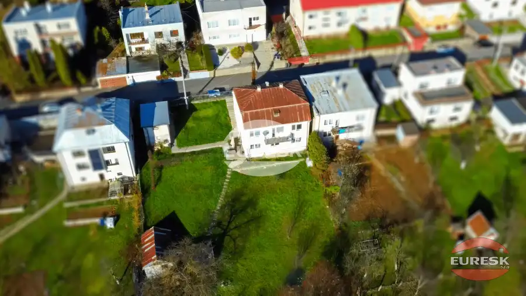
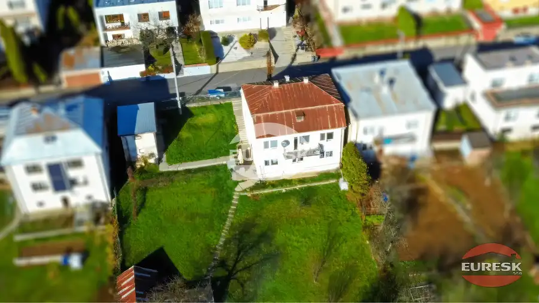
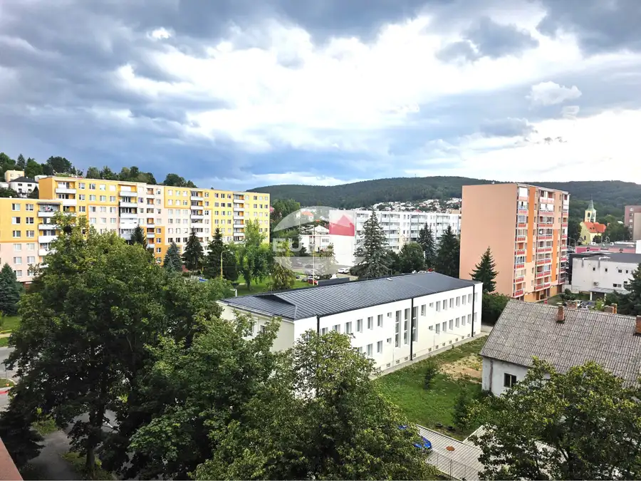
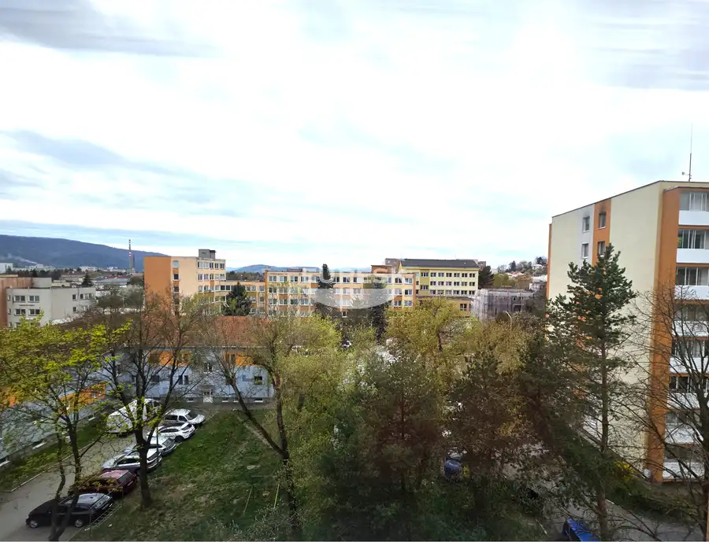
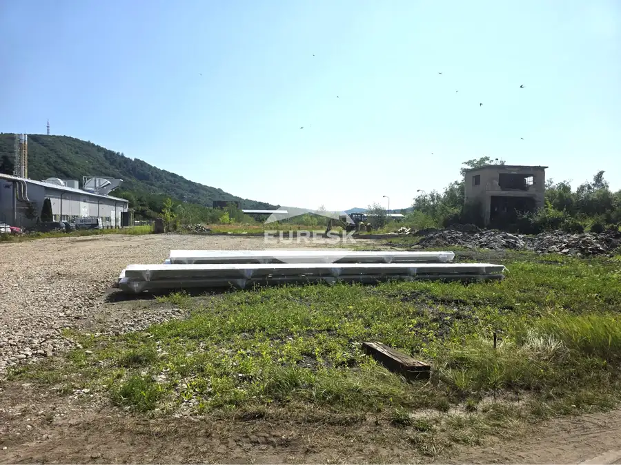

Exkluzívne na predaj: Rodinný dom vo vyhľadávanej lokalite Humenného s priestranným pozemkom a panoramatickým výhľadom
Humenné


- Plocha244 m²
- StavČiastočná rekonštrukcia
- VlastníctvoOsobné
O nehnuteľnosti
Ponúkame na predaj mimoriadne zaujímavú nehnuteľnosť na ulici Janka Kráľa, v pokojnej časti širšieho centra mesta Humenné. Rodinný dom stojí na priestrannom slnečnom pozemku s výmerou 1 215 m², ktorý svojou šírkou (cca 30 m) ponúka možnosti, aké sa v tejto lokalite objavujú len výnimočne – či už ide o komfortné bývanie, investíciu alebo realizáciu ďalšej výstavby.DISPOZIČNÉ RIEŠENIEDom je dvojpodlažný, s možnosťou využitia ako dve plnohodnotné samostatné bytové jednotky – ideálna voľba pre dvojgeneračné bývanie alebo prenájom.1. podlažie:vstupná chodba3 izbykuchyňakúpeľňa s WCkotolňa2. podlažie:priestranná chodbakuchyňajedáleň3 izbykúpeľňasamostatné WCšpajzabalkón s nádherným výhľadom na okoliePodkrovie poskytuje priestor na vytvorenie ďalšej obytnej zóny podľa predstáv nového majiteľa (ateliér, ďalšie izby, pracovňa).POZEMOK A DOPLNKYSúčasťou nehnuteľnosti je aj samostatne stojaca podpivničená garáž, ideálna ako dielňa, sklad alebo parkovacie miesto.Pozemok je rovinatý, slnečný a vďaka svojej nadštandardnej šírke umožňuje výstavbu ďalšieho rodinného domu, prípadne moderného oddychového zázemia.PREČO JE TENTO DOM MIMORIADNYvýborná adresa v širšom centreveľký a perfektne tvarovaný pozemokmožnosť dvoch plnohodnotných bytových jednotiekvhodný aj na investičné projektynádherný výhľad a pokojné prostrediepotenciál ďalšej výstavby alebo modernej rekonštrukcieCena: na vyžiadanie.Pre viac informácií alebo dohodnutie obhliadky nás neváhajte kontaktovať.Všetko vybavíme za Vás.Pre našich klientov zabezpečujeme kompletný realitný a právny servis vrátaneadministratívnych úkonov spojených s prevodom nehnuteľnosti. Kontaktné údaje:Ing. Danka Štofová, RSc.Tel.: 0908 728 426E-mail: stofova@euresk.sk
Parametre
- Druh
- Rodinný dom
- Dátum zverejnenia
- 03. 12. 2025
- Plocha pozemku
- 1215 m²
- Počet izieb / miestností
- 7
- Stav nehnuteľnosti
- Čiastočná rekonštrukcia
- Telekomunikácie
- Iné
- Typ
- Predaj
- Typ konštrukcie
- Tehlová
- Vlastníctvo
- Osobné
- Vybavenie
- Balkón, Garáž, Špajza
- Zastavaná plocha
- 239 m²
- Úžitková plocha
- 244 m²
Kde to je


Mohlo by Vás zaujímať

BytNové 124 000 €Na predaj priestranný 3-izbový byt s lodžiou– Humenné, ul. Čsl. Armády Humenné 3-izbový79.44 m²6. podlažie
BytNové 110 000 €Na predaj: 3-izbový byt priamo v centre mesta Humenné – ul. Kukorelliho Humenné 3-izbový59 m²5. podlažie
PozemokNové Cena na vyžádáníNa predaj stavebný pozemok s výmerou 3 000 m² v strategicky situovanom Priemysel-nom parku Snina. Snina 3000 m²